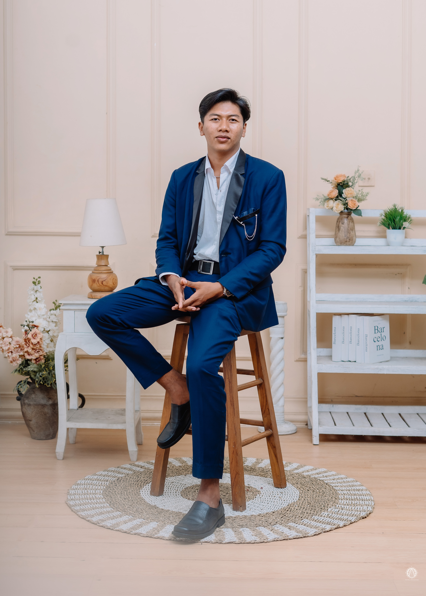

Institut Bisnis dan Teknologi Indonesia (INSTIKI)
Bachelor's Degree in Business Informatics
Concentration: Business Accounting
Graduation Year: 2026
Business Informatics Graduate
Accounting | Administration | Data Management
A detail-oriented graduate with an interest in accounting, administrative operations, and data management.
Explore My Portfolio
Indonesia | Bali
I am a graduate of Institut Bisnis dan Teknologi Indonesia (INSTIKI), majoring in Business Informatics with a concentration in Business Accounting.
I have an interest in accounting, administration, financial data processing, and information technology. Through my academic background and projects, I have developed an understanding of financial records, data management, and the use of technology to support business operations.
I am a disciplined, responsible, and detail-oriented person who is eager to learn and grow professionally.
Bachelor's Degree in Business Informatics
Concentration: Business Accounting
Graduation Year: 2026
My educational background combines business knowledge, accounting principles, and information technology.
Basic Financial Recording Financial Data Processing Basic Taxation Knowledge Understanding of Financial Reports
Document Management Data Entry and Processing Administrative Support
Microsoft Excel Jurnal.id Looker Studio MySQL Pentaho Data Integration
Attention to Detail Time Management Teamwork Responsibility Willingness to Learn
Thank you for taking the time to explore my portfolio.
I am always open to new opportunities, collaborations, and experiences across various fields. I look forward to connecting with people, sharing ideas, and contributing my skills while continuing to learn and grow.
I MADE ARI PRADITYA, S.Kom.
Email: madearipraditya@gmail.com
Location: Tegallalang, Gianyar, Bali, Indonesia
Let's create something meaningful together.